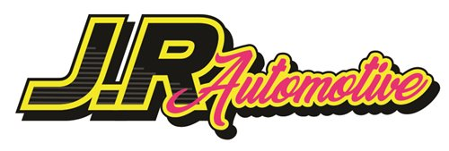

Services & Maintenance
Routine servicing, fluids, brakes, batteries and the everyday jobs that keep your vehicle reliable.

Napier | New ZealandServices
We help with everyday maintenance, WOF support, electrical faults, diagnostics, air conditioning, hybrid and EV servicing, and older vehicles.
Routine servicing, fluids, brakes, batteries and the everyday jobs that keep your vehicle reliable.
General vehicle repairs with clear communication about what matters now and what can wait.
WOF inspections and support for cars, trailers and LAMS motorcycles, with practical advice if something needs attention.
Battery, charging, wiring, lights, sensors and other electrical faults.
Warning lights, starting issues and drivability problems that need proper testing before parts are replaced.
Air con service and repair to help keep the system working properly.
Hybrid and EV certified servicing and practical workshop support.
Older vehicles, carburettor tuning, classic tune-ups and practical mechanical knowledge.